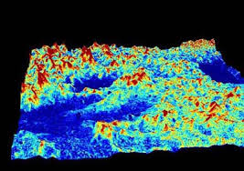
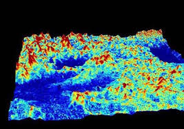

3. Study Area
Poyang Lake, in Jiangxi Province,
is the largest freshwater lake in China. With a mean depth of only 8.4
m, its shallow and turbid waters can commonly complicate the estimation
of the aerosol contribution. (Olet 2010, Wang 2007). In addition, the
main economic activity of the surrounding area is sand dredging which
is negatively impacting the Lake that was declared a Ramsar area in
1992.
|
Main hydrological
and morphological parameters of Poyang Lake*
|
|
Parameter
|
Value
|
|
|
12
m
|
|
|
2.95 km 3
|
|
|
8.4 m
|
|
|
25.1 m
|
|
|
5.000 years
|

Figure 2.
Region of interest RGB composite of ToARAD (Top of
atmosphere radiation) data. As it can be easily seen, shallow waters,
flooded areas and turbidity are common problems that we should deal
with when working on inland waters imagery. Note that Poyang lake
surface area rises from 1.000 sqkm in the dry season up to 4.400 sqkm
in the rainy season. UTM Grid. Year 2008 , doy 289 (day of year).
Landsat images were downloaded from the USGS Landsat archive as
Level 1T products. Landsat Ecosystem Disturbance Adaptive Processing
System (LEDAPS) data is also available on USGS website for the study
area. Other sensors of interest for studying water quality are SPOT,
Quickbird, etc. MERIS and MODIS have also been employed, but their
coarse resolution limit their usefulness to the larger water bodies.

 
